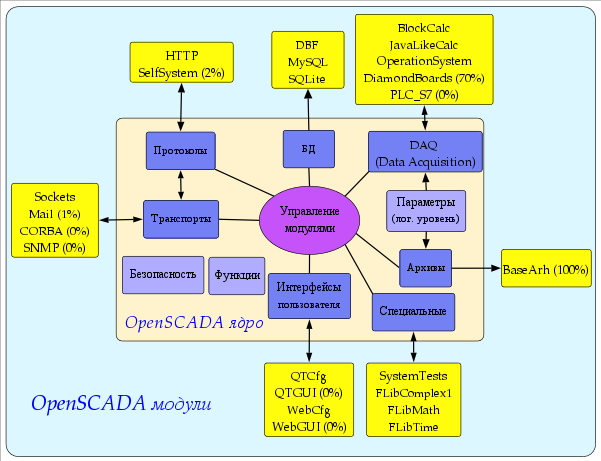
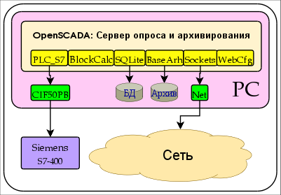
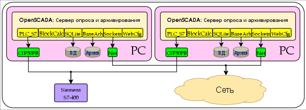
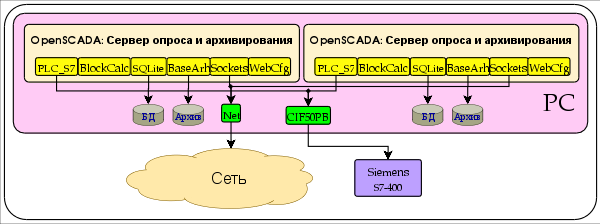
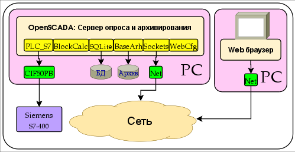
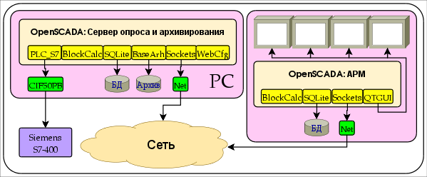
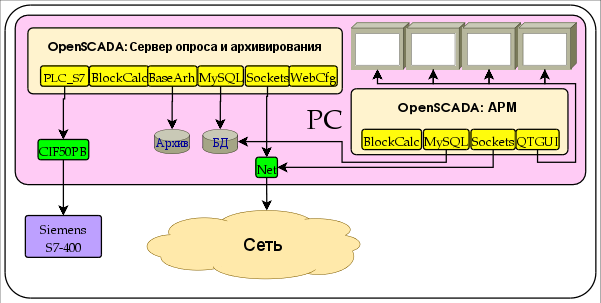

Cодержит описание системы OpenSCADA, её функций, назначения и применения.
1 Введение.
Данный документ является описанием “open source” проекта системы
именуемой “OpenSCADA”. OpenSCADA представляет собой открытую SCADA
систему построенную по принципам модульности, кроссплатформенности
и масштабируемости.
В качестве политики разработки данной системы выбраны “open
source” принципы. Выбор данной политики определяется необходимостью
создания открытой, надёжной и общедоступной SCADA системы. Данная
политика позволяет привлечь к разработке, тестированию, развитию,
распространению и использованию продукта значительное количество
разработчиков, энтузиастов и других заинтересованных
лиц с минимизацией и распределением финансовых затрат.
Система OpenSCADA предназначена для сбора, архивирования,
визуализации информации, выдачи управляющих воздействий, а также
других родственных операций характерных для полнофункциональной
SCADA системы. Благодаря высокому уровню абстракции и модульности,
система может использоваться во многих смежных областях.
Система OpenSCADA может применяться:
на промышленных объектах в качестве полнофункциональной SCADA системы;
во встраиваемых (embeded) системах в качестве среды
исполнения, в том числе внутри PLC (программируемых
логических контроллерах);
для построения различных моделей (технологических, химических, физических, электрических процессов);
на персональных компьютерах, серверах и кластерах
для сбора, обработки, представления и архивации информации
о системе и её окружении.
В качестве базовой (хостовой) операционной системы
для разработки и использования выбрана ОС Linux, которая
является оптимальным компромиссом в вопросах:
надёжности (большая доля серверов и кластеров работает на GNU/Linux);
гибкости/масштабируемости (ввиду своей открытости и модульности позволяет строить системы под любые требования);
доступности (благодаря лицензии GPL является полностью
свободной системой, а при высокой квалификации пользователя
и бесплатной);
популярности, развитости, поддержке, распространённости
(система активно развивается множеством энтузиастов, фирм
и государственными учреждениями со всего мира, получает всё
большую поддержку на пользовательском и корпоративном рынке,
активно внедряется в государственные структуры различных стран).
Поскольку проект разрабатывается и реализуется по принципам
кроссплатформенности, то не составляет проблемы портировать
его на другие ОС, что в дальнейшем планируется.
Сердцем системы является модульное ядро. И в зависимости
от того какие модули подключены система может выступать
как в роли различных серверов, так и в роли
разнообразных клиентов, а также совмещать эти функции
в одной программе. Это позволяет реализовывать
клиент-серверную архитектуру SCADA системы на базе одних
и тех же компонентов/модулей, экономя при этом: машинную
память, дисковое пространство, а также ценное время программистов.
Серверные конфигурации системы предназначены для сбора, обработки,
выдачи воздействий, архивирования, протоколирования информации
от различных источников, а также предоставления этой
информации клиентам (UI, GUI, TUI ...). Модульная архитектура
позволяет расширять функциональность сервера, даже без его
перегрузки.
Клиентские конфигурации могут строиться на основе различных
графических библиотек (GUI/TUI ToolKits), как используя ядро
программы и его модули (путём добавления к нему UI-user
interface модуля) так и в качестве самостоятельного
приложения подключая ядро OpenSCADA как библиотеку.
Возможность гибкой конфигурации системы позволяет строить системы
под конкретные требования надёжности, функциональности
и размеры системы.
2 Функции системы.

Рис. 1. Блочная схема системы OpenSCADA
2.1 Модульность.
Для придания гибкости и высокой степени масштабируемости,
система OpenSCADA построена по модульному принципу. Тесная
интеграция модулей с ядром системы накладывает большую
ответственность на процесс написания модулей и вводит элемент
нестабильности в систему, однако, благодаря возможности создания
распределённых конфигурация эта опасность сглаживается
с сохранением высокой степени гибкости.
Модули системы OpenSCADA хранятся в динамических библиотеках.
Каждая динамическая библиотека может содержать множество модулей
различного типа. Наполнение динамических библиотек модулями
определяется функциональной связностью самих модулей. Динамические
библиотеки допускают горячую замену, что позволяет в процессе
функционирования производить обновление отдельных частей системы. Метод
хранения кода модулей в динамических библиотеках является основным
для системы OpenSCADA, поскольку поддерживается практически всеми
современными операционными системами(ОС). Однако,
это не исключает возможности разработки других методов
хранения кода модулей.
На основе модулей реализованы следующие функциональные части системы OpenSCADA:
базы данных;
архивы (сообщений и значений);
протоколы коммуникационных интерфейсов;
коммуникационные интерфейсы, транспорты;
контроллеры (PLC) и другие источники динамических данных (DA);
интерфейсы пользователя (GUI,TUI,WebGUI, speach, signal ... .);
дополнительные модули, специальные.
Управление модулями осуществляется подсистемой «Управление модулями».
Функциями подсистемы является: подключение, отключение обновление
модулей, а также другие операции связанные с модулями
и библиотеками модулей.
2.2 Подсистемы.
Архитектурно система OpenSCADA делится на подсистемы. Подсистемы
могут быть двух типов: обычные и модульные. Модульные подсистемы
обладают свойством расширения посредством модулей. Каждая модульная
подсистема может содержать множество модульных объектов. Например
модульная подсистема «Базы данных» содержит модульные объекты типов
баз данных. Модульный объект является корнем внутри модуля.
Всего, система OpenSCADA содержит 10 подсистем из них 7 подсистем
являются модульными. 10 подсистем системы OpenSCADA являются базовыми
и присутствуют в любой конфигурации. К списку 10
подсистем могут добавляться новые подсистемы посредством модулей.
Подсистемы системы OpenSCADA:
Архивы (модульная).
Базы данных (модульная).
Безопасность.
Интерфейсы пользователя (модульная).
Управление модулями.
Сбор данных (модульная).
Параметры (логический уровень).
Протоколы (модульная).
Специальные (модульная).
Транспорты (модульная).
2.3 PLC и другие источники динамических данных. Подсистема «Сбор данных».
Для поддержки источников динамических данных, будь
то PLC-контроллеры, платы УСО, виртуальные источники и т.д.,
предназначена подсистема «Сбор данных». В функции этой подсистемы
входит предоставление полученных данных в структурированном виде
и обеспечение управления этими данными, например модификация
данных.
Подсистема «Сбор данных» является модульной и как следствие
содержит модульные объекты типов источников динамических данных.
Например, на май 2006г, система OpenSCADA поддерживает следующие
типы источников данных:
Diamond платы сбора данных.
Сбор данных ОС.
Блочный вычислитель.
Вычислитель на Java-подобном языке.
Каждый тип источника выполнен в виде отдельного модуля
который может быть подключен/отключен. Каждый тип источника может
содержать отдельные источники (контроллеры).
Отдельно взятый контроллер может содержать параметры, определённых
модулем, типов. Например параметр аналогового типа, основной
информацией которую он предоставляет является значение целого
или вещественного типа. Структурно, параметр представляет собой
список атрибутов которые и содержат данные. Атрибуты могут быть
четырёх базовых типов: символьная строка(текст), целое, вещественное
и логический тип.
Структуры контроллеров, параметров и их типов содержатся
в подсистеме «Сбор данных», а объекты модулей выполняют
их заполнение в соответствии с собственной спецификой.
Источник динамических данных может быть удалённым, т.е. быть подключен
на удалённой системе OpenSCADA. Для связи с такими
источниками данных предполагается использовать транспортный
тип контроллеров. Функцией данного типа источника данных является
отражение удалённого источника в локальной системе. (Планируется.)
2.4 Базы данных. Подсистема «Базы данных»
Для хранения данных системы повсеместно используются базы данных
(БД). В целях систематизации доступа и управления БД в
системе OpenSCADA предусмотрена подсистема «Базы данных».
Для обеспечения поддержки различных БД/СУБД подсистема выполнена
модульной.
В роли модульных объектов содержащихся в подсистеме,
выступает тип БД/СУБД, т.е. модуль подсистемы «Базы данных»,
практически, содержит реализацию доступа к определённому типу БД.
Например модули: DBF, MySQL, SQLite.
Объект типа БД/СУБД, в свою очередь, содержит список объектов
отдельных БД данного типа. А объект БД содержит список
объектов таблиц, которые и содержат данные в табличной форме.
Практически, все данные системы OpenSCADA хранятся в той
или иной БД. Инструментарий системы позволяет легко переносить
данные из одного типа БД на другой, и как следствие
оптимально подбирать тип БД под конкретную область применения
системы OpenSCADA.
Для организации централизованного доступа распределённой системы
к единой БД предусматриваются два способа. Первый
это использование сетевых СУБД, например My SQL.
Второй способ это использование транспортного типа БД на
локальных системах, для доступа к одной центральной БД (Планируется.). Функцией транспортной БД является пересылка запросов к БД на удалённую OpenSCADA систему.
Данные могут храниться, также, в конфигурационном файле системы.
Реализован механизм полного отражения структуры БД на структуру
конфигурационного файла. Т.е. cтандартную конфигурацию можно размещать
в конфигурационном файле. Суть такого механизма в том,
что данные системы по умолчанию, например при старте
без БД, можно описывать в конфигурационном файле.
В дальнейшем, эти данные могут переопределяться в БД.
Кроме этого, для случаев невозможности запуска какой либо БД,
можно все данные хранить в конфигурационном файле.
Для доступа к базам данных используется механизм регистрации
БД. Зарегистрированные в системе БД доступны всем подсистемам
системы OpenSCADA и могут использоваться в их работе.
Благодаря этому механизму можно обеспечить распределёность хранения
данных. Например, различные библиотеки могут храниться
и распространяться независимо, а подключение библиотеки будет
заключаться в простой регистрации нужной БД.
В дальнейшем, планируется реализация дублирования БД путём
связывания зарегистрированных БД. Этот механизм позволит значительно
повысить надёжность системы OpenSCADA в целом путём резервирования
механизма хранения данных. (Планируется.)
2.5 Архивы. Подсистема «Архивы».
Любая SCADA система предоставляет возможность архивирования собранных
данных, т.е. формирование истории изменения (динамики) процессов.
Архивы, условно, можно разделить на два типа: архивы сообщений
и архивы значений.
Особенностью архивов сообщений является то, что архивируются,
так называемые, события. Характерным признаком события является
время возникновения этого события. Архивы сообщений, обычно,
используются для архивирования сообщений в системе, т.е.
ведение логов и протоколов. В зависимости от источника,
сообщения могут классифицироваться по различным критериям.
Например, это могут быть протоколы аварийных ситуаций, протоколы
действий операторов, протоколы сбоев связи и др.
Особенностью архивов значений является их периодичность
определяемая промежутком времени между двумя смежными значениями.
Архивы значений применяются для архивирования истории непрерывных
процессов. Поскольку процесс непрерывный, то и архивировать
его можно только путём введения понятия квантования опроса
значений, поскольку иначе мы получаем архивы бесконечных размеров,
ввиду непрерывности самой природы процесса. Кроме этого, практически,
мы можем получать значения с периодом ограниченным самими
источниками данных. Например, довольно качественные источники данных,
в промышленности, редко позволяют получать данные с частотой
более 1кГц. И это без учёта самих датчиков имеющих ещё менее
качественные характеристики.
Для решения задач архивирования потоков данных в системе
OpenSCADA предусмотрена подсистема «Архивы». Подсистема «Архивы»
позволяет вести как архивы сообщений так и архивы
значений. Подсистема «Архивы» является модульной. Модульным объектом,
содержащимся в подсистеме «Архивы», выступает тип архиватора.
Тип архиватора определяет способ хранения данных, т.е. хранилище
(файловая система, СУБД, сеть и т.д.). Каждый модуль подсистемы
«Архивы» может реализовывать как архивирование сообщений
так и архивирование значений. Подсистема «Архивы» может
содержать множество архивов обслуживаемых различными модулями
подсистемы.
Сообщение в системе OpenSCADA характеризуется: датой, уровнем
важности, категорией и текстом сообщения. Дата сообщения указывает
на время создания сообщения. Уровень важности указывает
на степень важности сообщения. Категория определяет адрес
или условный идентификатор источника сообщения. Обычно, категория
содержит полный путь к источнику сообщения в системе. Текст
сообщения, собственно, и несёт смысловую нагрузку сообщения.
В процессе архивирования сообщения пропускаются через фильтр.
Фильтр работает по уровню важности и категории сообщения.
Уровень сообщения в фильтре указывает что нужно пропускать
сообщения с указанным или более высоким уровнем важности.
Для фильтрования по категории применяются шаблоны, которые
определяют какие сообщения пропускать. Каждый архиватор содержит
собственные настройки фильтра. Следовательно, можно легко создавать
различные специализированные архиваторы для архива сообщений.
Например архиваторы сообщений можно специализировать на:
логи, для хранения отладочной информации и другой рабочей информации сервера;
различные протоколы (протокол действий клиентов, протокол нарушений и исключений, протокол событий ... ).
Архив значений в системе OpenSCADA выступает как независимый
компонент, который включает буфер обрабатываемый архиваторами. Основным
параметром архива значения является источник данных. В роли
источника данных могут выступать атрибуты параметров системы OpenSCADA,
а также другие внешние источники данных (пассивный режим). Другими
источниками данных могут быть: сетевые архиваторы удалённых OpenSCADA
систем, среда программирования системы OpenSCADA и др.
Ключевым компонентом архивирования значений непрерывных процессов
является буфер значений. Буфер значений предназначен
для промежуточного хранения массива значений полученных
с определённой периодичностью (квантом времени). Буфер значений
используется как для непосредственного хранения больших массивов
значений в архивах значений, перед непосредственным «сбросом»
на физические носители, так и для манипуляций
с кадрами значений, т.е. в функциях покадрового запроса
значений и их помещения в буфера архивов.
Для организации выделенных архиваторов, в распределённых
системах можно использовать транспортный тип архиватора (Планируется.).
Функцией транспортного типа архиватора является отражение удалённого
центрального архиватора на локальной системе. Как следствие,
архиваторы транспортного типа выполняют передачу данных между локальной
системой и архиватором удалённой системы, скрывая
от подсистем локальной системы реальную природу архиватора.
2.6 Коммуникации. Подсистемы «Транспорты» и «Протоколы».
Поскольку, система OpenSCADA закладывается
как высоко-масштабируемая система то, поддержка коммуникаций
должна быть достаточно гибкой. Для удовлетворения высокой степени
гибкости, коммуникации в системе OpenSCADA реализованы
в подсистемах «Транспорты» и «Протоколы», которые являются
модульными.
Подсистема «Транспорты» предназначена для обмена
неструктурированными данными между системой OpenSCADA и внешними
системами. В роли внешних систем могут выступать и удалённые
OpenSCADA системы. Под неструктурированными данными понимается
массив символов определённой длины. Модульным объектом, содержащимся
в подсистеме «Транспорты», выступает тип транспорта.
Тип транспорта определяет механизм передачи неструктурированных
данных. Например это могут быть:
сокеты (TCP/UDP/UNIX);
каналы;
разделяемая память.
Подсистема «Транспорты» включает поддержку входящих и исходящих
транспортов. Входящий транспорт предназначен для обслуживания
внешних запросов и отправки ответов. Исходящий транспорт,
наоборот, предназначен для отправки сообщений и ожидания
ответа. Следовательно, входящий транспорт содержит конфигурацию данного
сервера, а исходящий транспорт содержит конфигурацию удалённого
сервера. Модуль подсистемы «Транспорты» реализует поддержку
как входящего так и исходящего транспортов.
Подсистема «Протоколы» предназначена для структуризации данных
полученных от подсистемы «Транспорты». По сути, подсистема
«Протоколы» является продолжением подсистемы «Транспорты»
и выполняет функции проверки структуры и целостности
полученных данных. Так, для указания протокола в связке
с которым должен работать транспорт предусмотрено специальное
конфигурационное поле. Модульным объектом, содержащимся
в подсистеме «Протоколы» является сам протокол. Например,
транспортными протоколами могут быть:
HTTP (Hyper Text Transfer Protocol);
SelfSystem (OpenSCADA системный протокол).
Полную цепочку связи можно записать следующим образом:
сообщение передаётся в транспорт;
транспорт передаёт сообщение, связанному с ним, протоколу путём создания нового объекта протокола;
протокол проверяет целостность данных;
если пришли все данные то сообщить транспорту
о прекращении ожидания данных и передать ему ответ иначе
сообщить что нужно ожидать ещё;
транспорт, получив подтверждение отсылает ответ и удаляет объект протокола;
если подтверждения нет то транспорт продолжает
ожидание данных, и в случае их поступления передаёт
их сохранённому объекту протокола.
Для исходящих транспортов протокол не используется. Точнее,
он реализуется в подсистеме желающей отправлять данные.
Благодаря стандартному API-доступа к транспортам системы
OpenSCADA, можно легко менять способ обмена данными не затрагивая
самих обменивающихся систем. Например в случае локального обмена
можно использовать более быстрый транспорт на основе разделяемой
памяти, а в случае обмена через интернет и локальную сеть
использовать TCP или UDP сокеты.
SCADA-системы, как класс, предполагают наличие интерфейсов
пользователя. В OpenSCADA для предоставления пользовательских
интерфейсов предусмотрена подсистема «Пользовательские интерфейсы».
Под пользовательским интерфейсом системы OpenSCADA понимается
не только среда визуализации, с которой должен работать
конечный пользователь, но и всё что, имеет отношение
к пользователю, например:
среды визуализации;
конфигураторы;
сигнализаторы.
Подсистема «Пользовательские интерфейсы» является модульной. Модульным
объектом подсистемы выступает, собственно, конкретный интерфейс
пользователя. Модульность подсистемы позволяет создавать различные
интерфейсы пользователей на различных GUI/TUI библиотеках
и использовать наиболее оптимальное из решений
в конкретно взятом случае, например для сред исполнения
контроллеров можно использовать конфигураторы и визуализаторы
на основе Web-технологий (WebCfg, WebUI), а в случае
стационарных рабочих станций использовать те-же конфигураторы
и визуализаторы, но на основе библиотек типа QT, GTK.
2.8 Параметры динамических данных (DA – data acquisition). Подсистема «Параметры».
Для предоставления доступа к динамическим данным
в системе OpenSCADA предусмотрены объекты «Параметры». Параметры
содержат атрибуты с динамическими данными. В атрибутах могут
храниться данные четырёх типов: целые, вещественные, логические
и строковые(текстовые). Для хранения истории значений, т.е.
архивов, атрибут может ассоциироваться с архивом.
Параметры, по источнику, делятся на два уровня: физический
и логический. Параметры физического уровня содержатся
и предоставляются подсистемой «Сбор данных». Параметры логического
уровня содержатся и предоставляются подсистемой «Параметры».
Физический уровень может предоставлять параметры только
предопределённой, типом контроллера, структуры. Логический уровень,
в противоположность физическому, может предоставлять параметры
различной структуры. Причём структура и конфигурация наполнения
атрибутов определяется пользователем. Логический уровень, также
поддерживает возможность организации резервирования параметров
и атрибутов, включая резервированный доступ к истории
атрибутов параметров (Планируется.).
2.9 Безопасность системы. Подсистема «Безопасность».
Система OpenSCADA является разветвлённой системой, которая состоит
из десятка подсистем и может включать множество модулей.
Следовательно, предоставление всем неограниченного доступа к этим
ресурсам является по крайней мере небезопасным. Поэтому,
для разграничения доступа в системе OpenSCADA предусмотрена
подсистема «Безопасности». Основными функциями подсистемы
«Безопасности» является:
хранение учётных записей пользователей и групп пользователей;
аутентификация пользователей;
проверка прав доступа пользователя к тому или иному ресурсу.
2.10 Пользовательские функции. Объектная модель и среда программирования системы.
Любая серьёзная SCADA система должна содержать механизмы
предоставляющие возможность программировать на пользовательском
уровне, т.е. содержать среду программирования. Система OpenSCADA
содержит такую среду. С помощью среды программирования системы
OpenSCADA можно реализовывать:
Алгоритмы управления технологическими процессами.
Крупные модели технологических, химических, физических и других процессов.
Адаптивные механизмы управления по моделям.
Пользовательские процедуры управления внутренними функциями системы, её подсистемами и модулями.
Гибкое формирования структур параметров на уровне
пользователя, с целью создания параметров нестандартной структуры
и заполнения её по алгоритму пользователя.
Вспомогательные вычисления.
Среда программирования системы OpenSCADA представляет собой
комплекс средств организующих вычислительное окружение пользователя.
В состав комплекса средств входят:
объектная модель системы OpenSCADA;
модули библиотек функций;
вычислительные контроллеры подсистемы «Сбор данных» и другие вычислители.
Модули библиотек функций предоставляют множество функций определённой
направленности, расширяющих объектную модель системы. Библиотеки могут
реализоваться как набором функций фиксированного типа
так и функциями допускающими свободную модификацию
и дополнение.
Библиотеки функций фиксированного типа могут предоставляться
стандартными модулями системы, органично дополняя объектную модель.
Функции таких библиотек будут представлять собой интерфейс доступа
к средствам модуля на уровне пользователя. Например «Среда
визуального представления данных» может предоставлять функции
для выдачи различных сообщений. Используя эти функции
пользователь может реализовывать интерактивные алгоритмы взаимодействия
с системой.
Библиотеки функций свободного типа предоставляют среду написания
пользовательских функций на одном из языков программирования.
В рамках модуля библиотек функций могут предоставляться механизмы
создания библиотек функций. Так, можно создавать библиотеки аппаратов
технологических процессов, а в последствии использовать
их путём связывания. Различные модули библиотек функций могут
предоставлять реализации различных языков программирования.
На основе функций предоставляемых объектной моделью строятся
вычислительные контроллеры. Вычислительные контроллеры выполняют
связывание функций с параметрами системы и механизмом
вычисления.
2.11 Управление библиотеками модулей и модулями. Подсистема «Управление модулями».
Система OpenSCADA построена по модульному принципу,
что подразумевает наличие множества модулей, которыми необходимо
управлять. Для выполнения функций управления модулями системы
OpenSCADA предусмотрена подсистема «Управление модулями».
Все модули, на настоящий момент, поставляются в систему
посредством разделяемых библиотек(контейнеров). Каждый контейнер может
содержать множество модулей различного типа.
Подсистема «Управление модулями» реализует контроль за состоянием
контейнеров и позволяет выполнять горячее добавление, удаление
и обновление контейнеров и содержащихся в них модулей.
Разумеется, предусмотреть всех возможных функций невозможно, поэтому
в системе OpenSACAD предусмотрена подсистема «Специальные».
Подсистема «Специальные» является модульной и предназначена
для добавления в систему OpenSCADA непредусмотренных функций
путём модульного расширения. Например, с помощью подсистемы
«Специальные» могут быть реализованы:
тесты системы OpenSCADA и её модулей;
библиотеки функций.
3 SCADA системы и их структура.
Рис. 2. SCADA-система.
SCADA (Supervisory Control And Data Acquisition), в общем
виде, имеют распределённую архитектуру изображённую на рис. 2.
Элементы SCADA систем, в смысле программного обеспечения,
выполняют следующие функции:
Сервер сбора: представляет собой
задачу или группу задач занимающихся сбором данных
из источников данных, или же сами выступают в роли
источником данных. В задачи сервера входит:
получение и/или формирование данных;
обработка данных;
обслуживание запросов на доступ к данным;
обслуживание запросов на модификацию данных.
Сервер архивирования: представляет собой задачу или группу задач занимающихся архивированием данных. В задачи сервера входит:
архивирование данных SCADA-системы;
обслуживание запросов на доступ к архивным данным;
импорт/экспорт архивов.
Сервер протоколирования: представляет собой задачу или группу задач занимающиеся архивированием сообщений. В задачи сервера входит:
архивирование сообщений узлов SCADA-системы;
обслуживание запросов на доступ к архивным сообщениям;
импорт/экспорт архивов.
Сервер сигнализации: представляет
собой задачу или группу задач выполняющие функции сервера
протоколирования в отношении узкой категории сообщений
сигнализации.
Рабочее место оператора: представляет собой
постоянно функционирующее GUI(Grafical User Interface) приложение
выполненное в одномониторном, многомониторном или панельном
режиме и выполняющее функции:
предоставление пользовательского интерфейса для контроля за состоянием технологического процесса;
предоставление возможности формирования управляющих воздействий;
предоставление возможности изучения и анализа истории технологического процесса;
предоставление инструментария для генерации отчётной документации.
Рабочее место инженера: представляет собой GUI приложение используемое для конфигурации SCADA системы. В задачи приложения входит:
предоставление инструментария для манипуляции системными функциями системы;
предоставление инструментария рабочего места оператора;
предоставление инструментария для манипуляции
архитектурой SCADA системы в целом (распределение функций между
станциями, создание удаление станций ... ).
Рабочее место руководителя: представляет собой GUI приложение, как правило, выполненное в одномониторном режиме и выполняющее функции:
предоставление пользовательского интерфейса для контроля за состоянием технологического процесса;
предоставление инструментария для изучения
и анализа истории технологического процесса,
как непосредственно с активного сервера, так и на
основе отдельных архивов;
предоставление инструментария для генерации отчётной документации.
Рабочее место технолога: полностью
включает в себя функции рабочего места оператора плюс модель
технологического процесса (без непосредственной связи
с технологическим процессом).
Рабочее место технолога-программиста:
полностью включает в себя функции рабочего места технолога плюс
инструментарий для создания моделей технологических процессов.
4 Способы конфигурирования и использования системы OpenSCADA.
4.1 Простое серверное подключение.
В простейшем случае систему OpenSCADA можно сконфигурировать
в серверном режиме (рис. 3) для сбора и архивирования
данных. Данная конфигурация позволяет выполнять следующие функции:
опрос контроллеров;
архивирование значений параметров;
обслуживание клиентских запросов;
предоставление конфигурационного WEB интерфейса;
вторичное регулирование (регулирование в вычислительных контроллерах);
моделирующие, корректирующие и дополняющие вычисления в вычислительных контроллерах.

Рис. 3. Простое серверное подключение.
4.2 Дублированное серверное подключение.
Для повышения надёжности и производительности система
OpenSСADA допускает множественное резервирование (рис. 4),
при котором контроллеры одного экземпляра отражаются
в другом. При использовании подобной конфигурации возможно
распределение нагрузки опроса/вычисления на различных станциях.
Данная конфигурация позволяет выполнять функции:
резервирование параметров;
резервирование архивов;
распределение нагрузки опроса по серверам;
предоставление конфигурационного WEB интерфейса;
вторичное регулирование (регулирование в вычислительных контроллерах);
моделирующие, корректирующие и дополняющие вычисления
в вычислительных контроллерах с возможностью распределения
нагрузки по серверам.

Рис. 4. Дублированное серверное подключение.
4.3 Дублированное серверное подключение на одном сервере.
Частным случаем дублированного соединения является дублированное
соединение в рамках одного сервера (рис. 5), т. е запуск
нескольких станций на одной машине с перекрещиванием
параметров. Целью данной конфигурации является повышение надёжности
и отказоустойчивости системы путём резервирования ПО.

Рис. 5. Дублированное серверное подключение на одном сервере.
4.4 Клиентский доступ посредством Web-интерфейса. Место руководителя.
Для визуализации данных содержащихся на сервере, хорошим
решением является использование пользовательского WEB-интерфейса (рис.
6). Данное решение позволяет использовать стандартный WEB-браузер
у клиента и следовательно является наиболее гибким, поскольку
не привязано к одной платформе, т.е. является
кроссплатформенным. Однако, это решение имеет существенные
недостатки – это невысокая производительность и надёжность.
В связи с этим рекомендуется использовать данный метод
для визуализации некритичных данных или данных имеющих
резервный высоконадёжный способ визуализации. Например хорошим решением
будет использование этого метода у начальства промышленных
установок, где всегда существует операторская с надёжным
способом визуализации. Данная конфигурация позволяет выполнять
следующие функции:
опрос сервера на предмет получения данных;
визуализация данных в доступном для понимания виде;
формирование протоколов, отчётов;
манипуляция параметрами допускающими изменение.

Рис. 6. Клиентский доступ посредством Web-интерфейса. Место руководителя.
4.5 Автоматизированное рабочее место (место руководителя/оператора).
Для визуализации критических данных, а также в случае
если требуется высокое качество и производительность, можно
использовать визуализацию на основе системы OpenSCADA
сконфигурированной с GUI модулем (рис. 7). Данная конфигурация
позволяет выполнять следующие функции:
опрос сервера на предмет обновления текущих значений;
визуализация опрошенных данных в доступном для понимания виде;
формирование протоколов и отчётов;
манипуляция параметрами допускающими изменения.

Рис. 7. Автоматизированное рабочее место (место руководителя/оператора)
4.6 АРМ с сервером сбора и архивирования на одной машине (место оператора, модель ...).
Полнофункциональная клиент-серверная конфигурация на одной машине
(рис. 8) может использоваться для повышения надёжности системы
в целом путём запуска клиента и сервера в разных
процессах. Данная конфигурация позволяет, без последствий
для сервера, останавливать клиент и выполнять с ним
различные профилактические работы. Рекомендуется для использования
на станциях оператора путём установки двух машин совмещающих
в себе станции оператора и резервированный сервер. Данная
конфигурация позволяет выполнять следующие функции:
опрос контроллеров;
обслуживание клиентских запросов;
визуализация;
выдача управляющих воздействий;
генерация протоколов и отчётов;
вторичное регулирование;
моделирующие, корректирующие и дополнительные вычисления в вычислительных контроллерах;
сбор и визуализация информации о персональном компьютере, сервере ... .

Рис. 8. АРМ с сервером сбора и архивирования на одной машине (место оператора, модель ...)
Смешанное подключение совмещает функции сервера и клиента (рис.
9). Может использоваться для тестовых, демонстрационных функций,
а также для предоставления моделей технологических процессов
как единое целое. В этом режиме могут выполняться следующие
функции:
опрос контроллеров;
обслуживание клиентских запросов;
визуализация;
выдача управляющих воздействий;
генерация протоколов и отчётов;
вторичное регулирование;
моделирующие, корректирующие и дополняющие вычисления в вычислительных контроллерах;
сбор и визуализация текущей информации о персональном компьютере, сервере ... ;
Сервер опроса, конфигурируется на основе системы OpenSCADA
и представляет собой задачу (группу задач) занимающихся опросом
контроллера (группы контроллеров одного типа). Полученные значения
доступны центральному серверу через любой транспорт, поддержка которого
добавляется путём подключения соответствующего модуля транспорта.
Для снижения частоты опроса и величины сетевого трафика,
сервер опроса может оснащаться небольшим архивом значений. Конфигурация
сервера опроса хранится в одной из доступных БД.
Центральный сервер архивирования и обслуживания клиентских
запросов выполняет функцию централизованного сбора и обработки
параметров серверов опроса и их значений. Доступ к серверам
опроса выполняется посредством одного из доступных
в OpenSCADA транспортов+протоколов (на примере это SGA).
Для предоставления единого интерфейса доступа к параметрам
и контроллерам используется модуль NetCntr который отражает данные
серверов опроса на структуру локальных параметров.
Для выполнения внутренних вычислений и дополнительного анализа параметров используются вычислительные контроллеры.
Для разностороннего и глубокого архивирования используются различные модули архивов.
Для доступа клиентов к серверу используются доступные
для OpenSCADA сетевые транспорты (на примере это Sockets).
Конфигурация Центрального сервера хранится в одной из доступных БД (на примере это сетевая СУБД MySQL).
Для предоставления пользовательского WEB-интерфейса используется модуль WebCfg.
Различные клиенты, в их числе АРМ и WEB-клиенты,
выполняются на отдельных машинах в необходимом количестве.
АРМ реализуется на основе системы OpenSCADA. В его
функции входит опрос значений параметров из Центрального сервера
и их визуализация на GUI интерфейсе(ах). Для получения
параметров в АРМ, также, используется модуль отражения удалённых
параметров NetCntr. Для предоставления доступа к архивам
может использоваться модуль архива сетевого типа. Конфигурация
АРМ может храниться в одной из доступных БД (в
примере это сетевая СУБД MySQL расположенная на машине
Центрального сервера архивирования).
")